Sage позволяет создавать любые алгебраические многообразия, но иногда функциональность ограничивается кольцами или конечными полями. Например, найдем объединение двух плоских кривых, а затем вычленим кривые как несократимые составляющие объединения.
sage: x, y = AffineSpace(2, QQ, 'xy').gens()
sage: C2 = Curve(x^2 + y^2 - 1)
sage: C3 = Curve(x^3 + y^3 - 1)
sage: D = C2 + C3
sage: D
Affine Curve over Rational Field defined by
x^5 + x^3*y^2 + x^2*y^3 + y^5 - x^3 - y^3 - x^2 - y^2 + 1
sage: D.irreducible_components()
[
Closed subscheme of Affine Space of dimension 2 over Rational Field defined by:
x^2 + y^2 - 1,
Closed subscheme of Affine Space of dimension 2 over Rational Field defined by:
x^3 + y^3 - 1
]
Также можно найти все точки пересечения двух кривых.
sage: V = C2.intersection(C3)
sage: V.irreducible_components()
[
Closed subscheme of Affine Space of dimension 2 over Rational Field defined by:
y - 1
x,
Closed subscheme of Affine Space of dimension 2 over Rational Field defined by:
y
x - 1,
Closed subscheme of Affine Space of dimension 2 over Rational Field defined by:
x + y + 2
2*y^2 + 4*y + 3
]
Таким образом точки 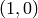 и 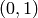 находятся на обеих кривых, а координаты по оси
 удовлетворяют функции 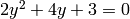.
удовлетворяют функции 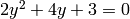.
Sage может вычислить тороидальный идеал неплоской кривой третьего порядка:
sage: R.<a,b,c,d> = PolynomialRing(QQ, 4)
sage: I = ideal(b^2-a*c, c^2-b*d, a*d-b*c)
sage: F = I.groebner_fan(); F
Groebner fan of the ideal:
Ideal (b^2 - a*c, c^2 - b*d, -b*c + a*d) of Multivariate Polynomial Ring
in a, b, c, d over Rational Field
sage: F.reduced_groebner_bases ()
[[-c^2 + b*d, -b*c + a*d, -b^2 + a*c],
[c^2 - b*d, -b*c + a*d, -b^2 + a*c],
[c^2 - b*d, b*c - a*d, -b^2 + a*c, -b^3 + a^2*d],
[c^2 - b*d, b*c - a*d, b^3 - a^2*d, -b^2 + a*c],
[c^2 - b*d, b*c - a*d, b^2 - a*c],
[-c^2 + b*d, b^2 - a*c, -b*c + a*d],
[-c^2 + b*d, b*c - a*d, b^2 - a*c, -c^3 + a*d^2],
[c^3 - a*d^2, -c^2 + b*d, b*c - a*d, b^2 - a*c]]
sage: F.polyhedralfan()
Polyhedral fan in 4 dimensions of dimension 4
Функциональность эллиптических кривых включает в себя большую часть функциональности PARI, доступ к информации в онлайн таблицах Cremona (что требует дополнительный пакет баз данных), функциональность mwrank, алгоритм SEA, вычисление всех изогений, много нового кода для и некоторую функциональность программного обеспечения Denis Simon.
Команда EllipticCurve для создания эллиптических кривых имеет много форм:
EllipticCurve([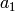, 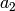, 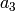, 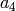, 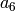]): Возвратит эллиптическую кривую
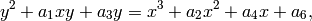
EllipticCurve([, ]): То же, что и выше, но 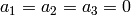.
EllipticCurve(label): Вернет эллиптическую кривую из базы данных Cremona с заданным ярлыком Cremona. Ярлык - это строка, например, "11a" or "37b2".
EllipticCurve(j): Вернет эллиптическую кривую с инвариантой  .
.
EllipticCurve(R,
[, , , , ]):
Создаст эллиптическую кривую из кольца  с заданными 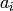‘ми, как было указано выше.
с заданными 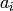‘ми, как было указано выше.
Использование каждого конструктора:
sage: EllipticCurve([0,0,1,-1,0])
Elliptic Curve defined by y^2 + y = x^3 - x over Rational Field
sage: EllipticCurve([GF(5)(0),0,1,-1,0])
Elliptic Curve defined by y^2 + y = x^3 + 4*x over Finite Field of size 5
sage: EllipticCurve([1,2])
Elliptic Curve defined by y^2 = x^3 + x + 2 over Rational Field
sage: EllipticCurve('37a')
Elliptic Curve defined by y^2 + y = x^3 - x over Rational Field
sage: EllipticCurve_from_j(1)
Elliptic Curve defined by y^2 + x*y = x^3 + 36*x + 3455 over Rational Field
sage: EllipticCurve(GF(5), [0,0,1,-1,0])
Elliptic Curve defined by y^2 + y = x^3 + 4*x over Finite Field of size 5
Пара  - это точка на эллиптической кривой
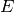, заданной функцией 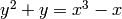. Для создания этой точки в Sage напечатайте E([0,0]).
Sage может добавить точки на такую эллиптическую кривую:
- это точка на эллиптической кривой
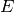, заданной функцией 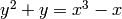. Для создания этой точки в Sage напечатайте E([0,0]).
Sage может добавить точки на такую эллиптическую кривую:
sage: E = EllipticCurve([0,0,1,-1,0])
sage: E
Elliptic Curve defined by y^2 + y = x^3 - x over Rational Field
sage: P = E([0,0])
sage: P + P
(1 : 0 : 1)
sage: 10*P
(161/16 : -2065/64 : 1)
sage: 20*P
(683916417/264517696 : -18784454671297/4302115807744 : 1)
sage: E.conductor()
37
Эллиптические кривые для комплексных чисел задаются параметрами инварианты . Sage вычислит инварианту :
sage: E = EllipticCurve([0,0,0,-4,2]); E
Elliptic Curve defined by y^2 = x^3 - 4*x + 2 over Rational Field
sage: E.j_invariant()
110592/37
Если мы создадим кривую с той же инвариантой , как для
, она не должна быть изоморфной .
В следующем примере кривые не изоморфны, так как их conductor'ы различны.
sage: F = EllipticCurve_from_j(110592/37)
sage: F.conductor()
37
Однако кручение  на 2 даст изоморфную кривую.
на 2 даст изоморфную кривую.
sage: G = F.quadratic_twist(2); G
Elliptic Curve defined by y^2 = x^3 - 4*x + 2 over Rational Field
sage: G.conductor()
2368
sage: G.j_invariant()
110592/37
Можно посчитать коэффициенты  ряда
ряда
 или модулярной формы
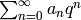, прикрепленной к эллиптической кривой.
Данное вычисление использует библиотеку PARI:
или модулярной формы
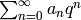, прикрепленной к эллиптической кривой.
Данное вычисление использует библиотеку PARI:
sage: E = EllipticCurve([0,0,1,-1,0])
sage: print E.anlist(30)
[0, 1, -2, -3, 2, -2, 6, -1, 0, 6, 4, -5, -6, -2, 2, 6, -4, 0, -12, 0, -4,
3, 10, 2, 0, -1, 4, -9, -2, 6, -12]
sage: v = E.anlist(10000)
Займет лишь секунду для подсчета всех для
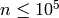:
sage: %time v = E.anlist(100000)
CPU times: user 0.98 s, sys: 0.06 s, total: 1.04 s
Wall time: 1.06
Эллиптические кривые могут быть построены с помощью их ярлыков Cremona.
sage: E = EllipticCurve("37b2")
sage: E
Elliptic Curve defined by y^2 + y = x^3 + x^2 - 1873*x - 31833 over Rational
Field
sage: E = EllipticCurve("389a")
sage: E
Elliptic Curve defined by y^2 + y = x^3 + x^2 - 2*x over Rational Field
sage: E.rank()
2
sage: E = EllipticCurve("5077a")
sage: E.rank()
3
Также есть доступ к базе данных Cremona.
sage: db = sage.databases.cremona.CremonaDatabase()
sage: db.curves(37)
{'a1': [[0, 0, 1, -1, 0], 1, 1], 'b1': [[0, 1, 1, -23, -50], 0, 3]}
sage: db.allcurves(37)
{'a1': [[0, 0, 1, -1, 0], 1, 1],
'b1': [[0, 1, 1, -23, -50], 0, 3],
'b2': [[0, 1, 1, -1873, -31833], 0, 1],
'b3': [[0, 1, 1, -3, 1], 0, 3]}
Объекты, возвращенные из базы данных, не принадлежат типу EllipticCurve. Это элементы базы данных, имеющие пару полей. Существует малая версия базы данных Cremona, которая есть по умолчанию в Sage и содержит ограниченную информацию о эллиптических кривых с conductor'ом . Также существует дополнительная большая версия, которая содержит исчерпывающую информацию о всех кривых с conductor'ом до 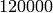 (Октябрь 2005). Еще один дополнительный пакет (2GB) для Sage содержит сотни миллионов эллиптических кривых в базе данных Stein-Watkins.
Символ Дирихле - это расширение гомоморфизма 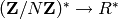 для кольца к
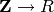
sage: G = DirichletGroup(21)
sage: list(G)
[[1, 1], [-1, 1], [1, zeta6], [-1, zeta6], [1, zeta6 - 1], [-1, zeta6 - 1],
[1, -1], [-1, -1], [1, -zeta6], [-1, -zeta6], [1, -zeta6 + 1],
[-1, -zeta6 + 1]]
sage: G.gens()
([-1, 1], [1, zeta6])
sage: len(G)
12
Создав группу, нужно создать элемент и с его помощью посчитать.
sage: chi = G.1; chi
[1, zeta6]
sage: chi.values()
[0, 1, zeta6 - 1, 0, -zeta6, -zeta6 + 1, 0, 0, 1, 0, zeta6, -zeta6, 0, -1,
0, 0, zeta6 - 1, zeta6, 0, -zeta6 + 1, -1]
sage: chi.conductor()
7
sage: chi.modulus()
21
sage: chi.order()
6
sage: chi(19)
-zeta6 + 1
sage: chi(40)
-zeta6 + 1
Также возможно посчитать действия группы Galois 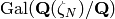 для этих символов.
sage: G.galois_orbits()
[
[[1, 1]],
[[1, zeta6], [1, -zeta6 + 1]],
[[1, zeta6 - 1], [1, -zeta6]],
[[1, -1]],
[[-1, 1]],
[[-1, zeta6], [-1, -zeta6 + 1]],
[[-1, zeta6 - 1], [-1, -zeta6]],
[[-1, -1]]
]
sage: G.decomposition()
[
Group of Dirichlet characters of modulus 3 over Cyclotomic Field of order
6 and degree 2,
Group of Dirichlet characters of modulus 7 over Cyclotomic Field of order
6 and degree 2
]
Далее надо построить группу символов Дирихле по модулю 20, но со значениями с 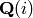:
sage: G = DirichletGroup(20)
sage: G.list()
[[1, 1], [-1, 1], [1, zeta4], [-1, zeta4], [1, -1], [-1, -1], [1, -zeta4],
[-1, -zeta4]]
Теперь посчитаем несколько инвариант G:
sage: G.gens()
([-1, 1], [1, zeta4])
sage: G.unit_gens()
[11, 17]
sage: G.zeta()
zeta4
sage: G.zeta_order()
4
В данном примере, символы Дирихле создаются со значениями в числовом поле, подробно задается выбор корня объединения третьим аргументом DirichletGroup.
sage: x = polygen(QQ, 'x')
sage: K = NumberField(x^4 + 1, 'a'); a = K.0
sage: b = K.gen(); a == b
True
sage: K
Number Field in a with defining polynomial x^4 + 1
sage: G = DirichletGroup(5, K, a); G
Group of Dirichlet characters of modulus 5 over Number Field in a with
defining polynomial x^4 + 1
sage: G.list()
[[1], [a^2], [-1], [-a^2]]
Здесь NumberField(x^4 + 1, 'a') говорит Sage использовать символ “a” для печати того, чем является K (числовое поле с определяющим полиномом 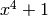). Название “a” не объявлено на данный момент. Когда a = K.0 (эквивалентно a = K.gen()) будет оценено, символ “a” представляет корень полинома .
Sage может выполнять вычисления, связанные с модулярными формами, включая измерения, вычисление модулярных символов, операторов Hecke и разложения.
Существует несколько доступных функций для вычисления измерений пространств модулярных форм. Например,
sage: dimension_cusp_forms(Gamma0(11),2)
1
sage: dimension_cusp_forms(Gamma0(1),12)
1
sage: dimension_cusp_forms(Gamma1(389),2)
6112
Далее показаны вычисления операторов Hecke в пространстве модулярных символов уровня 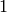 и веса 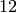.
sage: M = ModularSymbols(1,12)
sage: M.basis()
([X^8*Y^2,(0,0)], [X^9*Y,(0,0)], [X^10,(0,0)])
sage: t2 = M.T(2)
sage: t2
Hecke operator T_2 on Modular Symbols space of dimension 3 for Gamma_0(1)
of weight 12 with sign 0 over Rational Field
sage: t2.matrix()
[ -24 0 0]
[ 0 -24 0]
[4860 0 2049]
sage: f = t2.charpoly('x'); f
x^3 - 2001*x^2 - 97776*x - 1180224
sage: factor(f)
(x - 2049) * (x + 24)^2
sage: M.T(11).charpoly('x').factor()
(x - 285311670612) * (x - 534612)^2
Также можно создавать пространство для  и
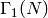.
и
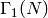.
sage: ModularSymbols(11,2)
Modular Symbols space of dimension 3 for Gamma_0(11) of weight 2 with sign
0 over Rational Field
sage: ModularSymbols(Gamma1(11),2)
Modular Symbols space of dimension 11 for Gamma_1(11) of weight 2 with
sign 0 and over Rational Field
Вычислим некоторые характеристические полиномы и 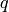-раскрытия.
sage: M = ModularSymbols(Gamma1(11),2)
sage: M.T(2).charpoly('x')
x^11 - 8*x^10 + 20*x^9 + 10*x^8 - 145*x^7 + 229*x^6 + 58*x^5 - 360*x^4
+ 70*x^3 - 515*x^2 + 1804*x - 1452
sage: M.T(2).charpoly('x').factor()
(x - 3) * (x + 2)^2 * (x^4 - 7*x^3 + 19*x^2 - 23*x + 11)
* (x^4 - 2*x^3 + 4*x^2 + 2*x + 11)
sage: S = M.cuspidal_submodule()
sage: S.T(2).matrix()
[-2 0]
[ 0 -2]
sage: S.q_expansion_basis(10)
[
q - 2*q^2 - q^3 + 2*q^4 + q^5 + 2*q^6 - 2*q^7 - 2*q^9 + O(q^10)
]
Также возможны вычисления пространств модулярных символов с буквами.
sage: G = DirichletGroup(13)
sage: e = G.0^2
sage: M = ModularSymbols(e,2); M
Modular Symbols space of dimension 4 and level 13, weight 2, character
[zeta6], sign 0, over Cyclotomic Field of order 6 and degree 2
sage: M.T(2).charpoly('x').factor()
(x - 2*zeta6 - 1) * (x - zeta6 - 2) * (x + zeta6 + 1)^2
sage: S = M.cuspidal_submodule(); S
Modular Symbols subspace of dimension 2 of Modular Symbols space of
dimension 4 and level 13, weight 2, character [zeta6], sign 0, over
Cyclotomic Field of order 6 and degree 2
sage: S.T(2).charpoly('x').factor()
(x + zeta6 + 1)^2
sage: S.q_expansion_basis(10)
[
q + (-zeta6 - 1)*q^2 + (2*zeta6 - 2)*q^3 + zeta6*q^4 + (-2*zeta6 + 1)*q^5
+ (-2*zeta6 + 4)*q^6 + (2*zeta6 - 1)*q^8 - zeta6*q^9 + O(q^10)
]
Пример того, как Sage может вычислять действия операторов Hecke в пространстве модулярных форм.
sage: T = ModularForms(Gamma0(11),2)
sage: T
Modular Forms space of dimension 2 for Congruence Subgroup Gamma0(11) of
weight 2 over Rational Field
sage: T.degree()
2
sage: T.level()
11
sage: T.group()
Congruence Subgroup Gamma0(11)
sage: T.dimension()
2
sage: T.cuspidal_subspace()
Cuspidal subspace of dimension 1 of Modular Forms space of dimension 2 for
Congruence Subgroup Gamma0(11) of weight 2 over Rational Field
sage: T.eisenstein_subspace()
Eisenstein subspace of dimension 1 of Modular Forms space of dimension 2
for Congruence Subgroup Gamma0(11) of weight 2 over Rational Field
sage: M = ModularSymbols(11); M
Modular Symbols space of dimension 3 for Gamma_0(11) of weight 2 with sign
0 over Rational Field
sage: M.weight()
2
sage: M.basis()
((1,0), (1,8), (1,9))
sage: M.sign()
0
Допустим, 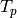 - это обычный оператор Hecke ( простое). Как операторы Hecke 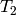, 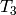,
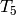 ведут себя в пространстве модулярных символов?
простое). Как операторы Hecke 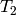, 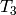,
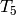 ведут себя в пространстве модулярных символов?
sage: M.T(2).matrix()
[ 3 0 -1]
[ 0 -2 0]
[ 0 0 -2]
sage: M.T(3).matrix()
[ 4 0 -1]
[ 0 -1 0]
[ 0 0 -1]
sage: M.T(5).matrix()
[ 6 0 -1]
[ 0 1 0]
[ 0 0 1]